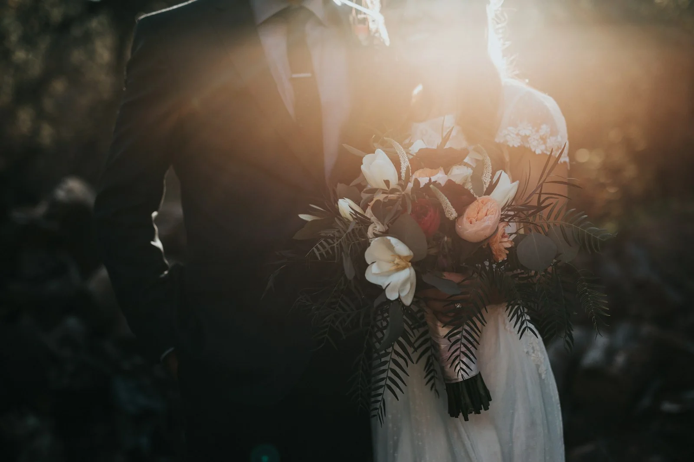

Clack fan
33cmA bold canvas for event artwork.
Explore this format
A bold canvas for event artwork.
Published format: 33cm Clack Fan. Bamboo frame + polyester fabric.
Ask on WhatsAppAsk by emailCustom folding fans
For the gathering you’re planning.
The brand you’re building.
The moment you want people to remember.

One familiar object.
So many ways to make it personal.
The collection
Four custom formats.
Two existing-design collections.
A bold canvas for event artwork.
A bold canvas for event artwork.
Published format: 33cm Clack Fan. Bamboo frame + polyester fabric.
Ask on WhatsAppAsk by email
A compact folding format for thoughtful details.
A compact folding format for thoughtful details.
Published format: 21cm Bamboo Fan. Natural bamboo + fabric.
Ask on WhatsAppAsk by email
Colour and light for after-dark ideas.
Colour and light for after-dark ideas.
Published format: LED 33cm Fan. Confirm lighting, power and packing.
Ask on WhatsAppAsk by email
Another way to carry your colour.
Another way to carry your colour.
Published format: 23cm PVC Fan. PVC frame + fabric.
Ask on WhatsAppAsk by emailExplore existing artwork directions. Confirm available designs and quantities with us.
 Stock bamboo＋
Stock bamboo＋Start with an existing design direction.
Published format: 21cm Stock Bamboo Fan. Natural bamboo + fabric.
Ask on WhatsAppAsk by email Stock clack＋
Stock clack＋Explore the printed collection.
Published format: 33cm Stock Clack Fan. Bamboo frame + polyester fabric.
Ask on WhatsAppAsk by emailColour. Print. A personal point of view.Make it yours
A print across the fan. A palette that belongs to your brand. A way to hand it over. Begin with the details that matter to your project.
Beyond the product
Choose a setting.
Explore what you could make.

Weddings＋Match the artwork, colour and presentation to the celebration. Ask which format and packaging suit your guest plan.
Ask on WhatsAppExplore a bold print for a party or festival. Confirm the fan format, artwork and distribution plan.
Ask on WhatsAppStart with your campaign artwork. Discuss print placement, quantities per design and sample scope.
Ask on WhatsAppPlan a team-colour or event design, with the format and receiving point confirmed before production.
Ask on WhatsApp Charities＋
Charities＋Consider campaign messaging and how the fans will be handed out. Confirm artwork permission and project quantities.
Ask on WhatsApp Colleges & schools＋
Colleges & schools＋Explore a campus or celebration design. Confirm the intended use, selected format and packing.
Ask on WhatsAppOccasion imagery illustrates a possible setting, rather than completed client work.


Behind the fan
Fanique’s published introduction covers custom folding, clack and promotional fans, from bamboo cutting and fabric printing to assembly and packing.
Start with the intended use. Review the artwork and sample scope. Keep the agreed specification with the project through to packing.
Ask about the makingFrom the current published factory profile. Read the original introduction and confirmation notes.
A clearer next step
The right questions make a stronger project.
Yes, you can start the conversation with your idea. Ask what artwork files, print layout and approvals are needed for your selected format.
Tell us the format and proposed design. Confirm whether the minimum applies per design, colour or total order, rather than assuming one figure applies to every project.
Agree the artwork revision, materials, structure and print details covered by the sample. Confirm the sample cost and shipping before arranging it.
Mention it when useful. Production, transport, receiving and distribution are separate stages to confirm. A date is not required to ask your first question.
Tell us what you have in mind. You can explore the possibilities before preparing a detailed brief.
Chat on WhatsAppPrefer email? Use the form. No quantity or deadline is required for a first conversation.
The current site presents GetFanique as a China-based manufacturer of custom folding, clack and promotional hand fans for festivals, concerts, sports events and brand activations.
GetFanique specializes in custom folding fans, clack fans, and promotional hand fans for festivals, concerts, sports events, and brand activations. Using premium bamboo frames, durable polyester fabric, and high-quality printing, we help brands create memorable event merchandise that stands out in any crowd.
Current website introduction. Company identity, capabilities and product-specific claims remain to be confirmed.
20,000 sqm workshop, 200+ skilled artisans, 15+ folding & clack fan production lines. From custom bamboo cutting to high-quality fabric printing and precision assembly, every step is carefully monitored. We provide photo and video updates throughout your production process — from first sample to final packaging — so you’ll never wonder what’s happening with your order.
Current site description, preserved for comparison; independent factory verification and actual update terms have not been obtained in this research.
The current product cards show 500 pcs; the FAQ says 500 pcs per design, while the hero/footer also show 100 pcs. Confirm the actual format, customisation and per-design minimum rather than treating those figures as one policy.
The current site states sample production around 7 days, mass production 15 days after sample approval, digital mockups within 24 hours and a factory response within 12 hours. These are existing claims, not verified commitments for this preview. Confirm their start conditions, working/calendar days, shipping and receiving.
Existing custom options include fabric printing, rib size/frame materials and LED modules. Current stock styles are described as available for faster branding and lower-quantity orders. Availability, scope, waterproof/environmental claims and the actual model’s requirements need confirmation.
The site describes worldwide shipping and production photo/video updates. Confirm destination, costs, usable-by date and update terms for the project.
Product names and nominal sizes are the original website’s descriptions. Confirm the final material, dimensions, artwork and supply terms for your order. The stock bamboo illustration is marked AI-generated by the original site.
Occasion photographs are mood references, not Fanique customer projects. Stock-photo licence information. Original occasion artwork remains available in the earlier design.